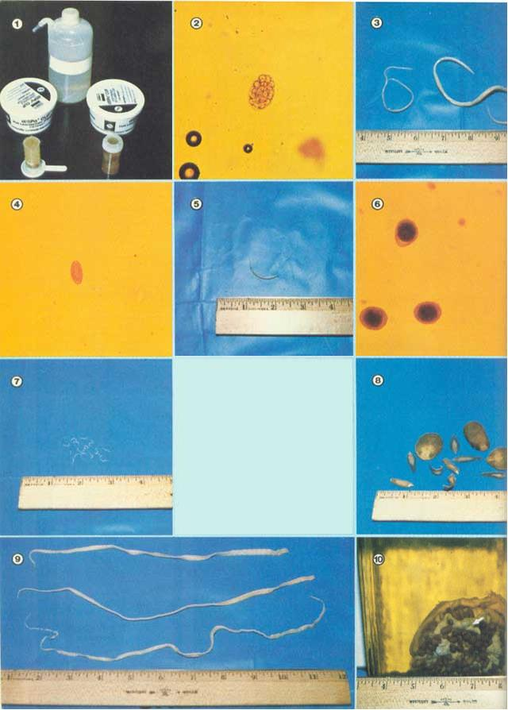

PART I
Veterinarian Randy Kidd is back ... with more on how to keep your pets and barnyard animals
healthy.
It's very possible that a number of total strangers are thriving on the food that you give to your livestock or pets. These "freeloaders" may take many forms, but they usually resemble white worms and could be either several feet in length or microscopically small.
I'm talking, of course, about internal parasites, and-if your feed bills have been rising while the general health and productivity of your animals have been slipping-these pests are probably already well established around your farm or home.
Internal parasites (commonly called worms) occur in every part of the world . . . and each living creature (yes, even humans) has its own particular worms. Worse yet, since these parasites live (usually) in an animal's belly or intestines, you may not even know that your beasts are infested with 'em! Of course, animals with severe worm problems will display some of the classic symptoms-such as weight loss, poor growth, low milk yields, weakness, or white gums-but a critter can have parasites without showing such drastic signs. For example, a recent experiment-conducted on healthy- looking goats-showed that milk production was increased by 17% after one dose of an effective worm medicine!
Before you can even begin a parasite elimination program, though, you'll have to realize that you are faced with more than one form of pest. You see, most worms have several stages in their life cycles . . . and-in order to completely eradicate the freeloaders-you have to attack each of those Individual stages separately.
In order to explain this difficulty, let's look at the life cycle of the common parasite, Haemonchus . The adult worm thrives in the stomachs of sheep and goats, and there, in its hiding place, the parasite lays tough-skinned eggs . . . which are passed In the host animal's feces (manure). Now, these eggs can lie on your fields for years (unaffected, in many cases, by either freezing cold or intense heat), just waiting for another animal to come along and pick them up.
So, the first problem that confronts the "do it yourself" parasite controller is that worm eggs can be almost anywhere and are nearly impossible to destroy.
But, let's continue with our "sample" parasite. The eggs in that sheep or goat manure may, perhaps, be picked up by a small snail who happens to be munching grass in the area. Once inside the snail (which is referred to as the parasite's "intermediate host"), the egg will develop into a larva . . . this is the second stage in the life cycle of the Haemonchus .
The snail, however, crawls merrily around and hardly notices the presence of the worm larva. Then along comes your friendly lamb or kid-who isn't a particularly fussy eater-and he or she munches on the tasty grass and inadvertently swallows the tiny snail.
Now that the larva is back in the kind of critter that makes it happiest (in this example the sheep or goat is the final or '' definitive'' host), it will do one of several things. For instance, the larval worm may move into the animal's stomach, develop into an adult parasite, and begin passing more eggs onto your pasture. Or, for some unknown reason, the larva might decide to take a detour on the way to its host's stomach. This "side trip" is called larval migration, and-since it could take the pest through muscles, blood vessels, lungs, or liver-can be more harmful to your animal than the adult worm would be. (This is, of course, not a particularly appealing or appetizing picture of the worm's life cycle, but internal parasites aren't particularly appealing or appetizing creatures.)
On the other hand, the parasite larva may find the environment inside your critter not to its liking. When this happens, the larva will form a cocoonlike substance around itself (this is called "encysting") and can-in this form-lie dormant until a change in the internal environment causes it to emerge. Unfortunately, the environmental changes that make life easier for the encysted larva can further compound your parasite problems. When your ewe or doe gets pregnant-for example-its internal environment may change enough to cause the parasite to emerge from its cyst and begin another migration. If this happens, the traveling larva might find its way directly into the unborn offspring or into the mother's milk . . . which explains why many animals are infested with parasites at birth.
This example should convince you that worms are pretty difficult to eliminate. You could, for instance, try to get rid of all the eggs . . . but-unless you're capable of (and interested in) picking up every little, black sheep or goat nugget in your pasture-this will be a nearly impossible task.
Or, of course, you can try to kill the adult parasites by giving your beast the proper medication . . . but the medicine that will destroy the adults will, usually, not kill the larvae. Because of this, you must administer worm medicine at least twice (once to destroy the adults and once to kill the larvae after they've become adults), and it's better still to administer wormers periodically throughout the host critter's lifetime.
There is, however, no need to throw your hands up in despair. Because there are many things that you can do to ease your animals' parasite problems . . . and fortunately, a number of these preventive measures are easy enough for anyone to undertake.
In the case of the sheep and goat parasite, for instance, there are several simple courses of action that could help break the egg-larva-adult life cycle.
You could, perhaps, allow your animals to use a large pasture rather than cramping them together in a small pen. This would insure that the critters had less exposure to their own manure and would also lessen the chance that any wandering snails (or other intermediate hosts) would pick up parasite eggs. Also, if the pasture is thick and lush, your beasts are less likely to gulp down one of those snails . . . because the little shelled critters like to stay hidden in moist places beneath the grass cover.
And, of course, you'll want to keep your animals' "living quarters"-whether these are in the barn or shed-scrupulously clean. Daily manure removal is a must with most farm beasts . . . and don't forget that the manure is "organic gold" for your compost pile. Remember, too, that many worm eggs won't attain their effective stage until after they've matured on the ground for a few days, so-by consistently removing the animal droppings-you can actually break the parasite's life cycle! (The rule around the Kidd house is: "If a stall isn't clean enough to sit down in, it's time to get the pitchfork out." This attitude has helped us keep our worm-and rusty pitchfork-problems to a minimum!)
If you have two or more pasture areas, it's wise to rotate your grazing livestock so the animals will only be pastured on a particular piece of land every two (or, better yet, three) years. This pasture rotation gives Mother Nature a chance to help you eliminate your parasites ... by either covering the eggs with dirt or killing them-over a period of time-with sun and frost. Also, the majority of the snails, etc. that might have ingested a larva will have disappeared after a span of a year or two.
As you can see, simple good husbandry can go a long way toward breaking the life cycles of most parasites. And you have another ally in your fight against worms, too . . . the natural resistance to parasites that your animals can develop. A beast's ability to resist parasitic infestation can be compared to your ability to "throw off" a cold. While you'll likely never completely avoid colds, your body may-as you grow older-become less and less susceptible to these minor illnesses. So it is, too, with animals and their parasites ... as the beast matures, it becomes at least partially resistant to some worms.
But-just as our resistance to the common cold can be lowered if we become "run down" or exposed to unhealthy environmental conditions-a weary, unsheltered, or poorly fed animal will be much less likely to develop an immunity to parasites.
At this point you're probably scratching your head and wondering if your beasts might, indeed, have parasites. Unfortunately, there's no way for you to tell by looking at the animals. A dog who eats grass may have worms . . . but then again, he or she might just like eating grass. A goat who chews on the manger may carry parasites, too, or perhaps be simply bored. Unless animals are heavily infested, they won't likely show the classic "symptoms". The beasts may just not be as "vital" as they would be if they were completely healthy.
Most worms that could infect your pets or barnyard beasts are far too tiny to be detected with the naked eye. The tapeworm, however, is the exception to this rule. If you notice small, white, worm-like things crawling around in fresh manure (or small, white, dried-up objects that resemble rice grains) chances are that your critter has tapeworms. The "ricey" looking objects are actually segments, or proglottids, of what may be a very long parasite . . . and each of these sections is a "packet" that contains many tapeworm eggs.
The only way to discover whether or not your critters have the smaller worms, though (or to tell which kinds of worms they're harboring), is to have your vet check the animals out. To do this, the veterinarian will mix a sample of the beasts' manure in a solution . . . and the manure will sink while the parasite eggs float to the top. By examining these eggs under a microscope, the vet will be able to tell what kinds of worms are present and can then determine the best methods to control the pests. (Having a fecal sample analyzed for parasite eggs shouldn't run you more than a few dollars . . . and unchecked worms could cost you more than that in no time!)
All you have to do to prepare for one of these tests is collect a sample of fresh manure-a lump about half the size of a horse chestnut will do-and whisk it off to your vet. You will, of course, need a separate example for each kind of animal that you have, but-if you keep a number of one kind of critter in one area-you'll only need a single sampling ... as all of the sheep, cows, etc. In that pasture or barn will probably be hosting the same parasites.
Remember that the samples (you can carry 'cm in an old baby food jar or the like if your vet doesn't provide a container) should be fresh. If the manure sits for too long, the eggs may hatch into larvae . . . and these won't necessarily be found by a vet who's looking for eggs. Tapeworm segments won't show up in a flotation test, either . . . but, of course, you'll be able to spot those worm "indicators" yourself.
If, for some reason, you have to wait a day or two between the time that you collect the samples and your trip to the vet, put the manure (safely sealed in its jar, of course) in the refrigerator. When kept cool in this way, the samples will be "good" indefinitely.
Once you and your vet have determined what kind of parasites (if any) your animals have, you can decide what sort of worm medicine will most effectively eliminate the pests.
There are several things to consider before you choose the kind of wormer (these medicines are called anthelmintics . . . anti = against, helmins = worm) you want to use.
The anthelmintic that you select (with your veterinarian's help) should, of course, kill the particular worms that your critter has . . . and shouldn't be harmful to the host animal. Piperazine, for example, is an anthelmintic that is used in a number of worm preparations, and it's an extremely safe medication for almost all critters. However, while piperazine is effective against round-worms, it will kill few-if any-hook-worms, tapeworms, or whipworms.
So, ideally, the medication that you administer should be highly effective against many kinds of worms. Several recent anthelmintics have been developed that can destroy a variety of parasites, and some of 'em will kill nearly all of the worms that are commonly found in critters. These medicines are the broad-spectrum anthelmintics.
And, since these broad-spectrum anthelmintics allow you to use one medication for almost all of your parasite problems (some of 'em even destroy migrating parasitic larvae!), they can really simplify a do-it-yourself worm elimination program.
Finally, the anthelmintic you choose should be both economical and easy to administer. Most of the newer worm medications come either in powder or granular forms (which can be sprinkled on feed) or in a paste or liquid (that can be squirted directly into the animal's mouth).
Remember, though, that any anthelmintic should be administered in the prescribed manner . . . and in many cases wormers should be used at a particular time of year. Anthelmintics for bots (a horse parasite), for example, should-in most parts of the U.S.-be given at least once after the first frost. There also seems to be a seasonal increase in the release of parasite eggs ... so your control program had best include a treatment that correlates with this stepped-up egg "production".
And, of course, there are certain specific precautions that should be taken when using anthelmintics. PLEASE TAKE THE TIME TO READ THE FOLLOWING CAUTIONS:
Further information about how you can keep your farm animals and house pets healthy can be found in the following sources:
1. "Common Sense Control of Internal Parasites in Ruminants", MOTHER NO. 19, pages 38-41.
2. "Worm Your Livestock With Snuff", MOTHER NO. 44, page 95.
3. "How to Give That First Injection", MOTHER NO. 43, page 90a (poster).
4. "Restrain That Beast!", MOTHER NO. 52, pages 84-87.
5. "You Can Too Give That Animal an Injection", MOTHER NO. 53, pages
92-97.
6. "Be Your Own 'Animal Medicine Man' ", MOTHER NO. 54, pages 75-78.
7. "Restrain and Medicate Your Homestead Horse", MOTHER NO. 55, pages
74-77.
(These back issues of MOTHER are available-for $2.50 each plus $1.00 shipping and handling per order-from THE Mother Earth News (restricted) , P.O. Box 70, Hendersonville, North Carolina 28739.)
Caution No. 1: Know what you're doing! Before using an anthelmintic (or any type of medication), read the directions on the label . . . and then reread them until you understand everything that they recommend!
Caution No. 2: Use the correct dosage . Anthelmintics are meant to eliminate parasites without harming the host animal. Overdoses of wormers can make an animal sick, or even kill the beast. Do not assume that a double dose of worm medicine will be twice as effective as the recommended quantity . . . overdosing is an often fatal mistake.
And, since many of these medicines are administered according to the "patient's" weight, be sure that you know how much your critter weighs or that you at least have a knowledgeable person do the estimating for you. (Sale barns or county fairs are good places to learn weight estimation . . . since the animals are all weighed before the sale or show.)
Caution No. 3: Be extremely careful when using anthelmintics on sick animals, young animals, pregnant animals, or lactating animals (critters giving milk) . It is always potentially dangerous to give any medicine to a sick animal, and anthelmintics are no exception to the rule. The same warning applies to young beasts, too, and some worm remedies should never be used until a critter reaches a prescribed age.
Pregnant animals should only be medicated under a vet's supervision. Some of the older wormers acted by increasing the muscle activity of the intestines . . . in order to shake the worms loose and flush them out. This kind of medication could also cause muscular activity in the uterus (or womb) . . . and result in an aborted offspring.
Finally, almost all medicines given to a milking animal will be passed into the milk, and-again-anthelmintics will follow this pattern. Of course, the quantity of medication that is passed into the milk-and the length of time during which it will show up-varies from one drug to another.
Dairy farmers refer to the time period during which a medicine can be detected in milk as the "withdrawal time" for that medication. No milk should be used for human consumption during this withdrawal time . . . although some of it may be safe for animal use. There is also evidence that several wormers will cause a milking cow or goat to dry up (quit producing milk).
When you're in doubt about using a particular anthelmintic on any sick, young, pregnant, or lactating animal, always consult your vet before administering the medication.
If you've been listening closely up to this point, you're probably anxious to begin your own worm elimination program. So, let's take a look at Dr. Kidd's Famous Five Point Parasite Control Course (well . . . maybe someday it'll be famous).
POINT 1: There is a wealth of wisdom in keeping your critters healthy . Give your animals all of the aid you can in their battles against internal parasites. This help should include a wholesome diet, a fresh water supply, clean and adequate shelter and bedding, and-once in a while-a little bit of affection to keep the critters content. A healthy, happy animal is much more likely to be able to develop its own resistance to internal parasites.
POINT 2: Graze your grass graciously . If possible, rotate your animals annually to a completely fresh pasture (that is, a piece of land that hasn't had beasts on it for at least a year). A three-year pasture rotation, of course, would be even better. (Remember, too, that adequate pasture space helps avoid dense accumulations of potentially egg-bearing manure.)
POINT 3: Manage your manure . Animals that are confined in pens, sheds, stalls, or kennels should have their manure removed daily. In addition, the barnyard or feedlot should be cleaned periodically.
(No parasite control program is complete UNTIL you practice-religiously-these first three points!)
POINT 4: Pickle those parasites with the proper parasiticide . Identify the parasites that are infecting your animals, and then attack the squirmy villains with the best ammunition that you have . . . consistent and routine use of an effective anthelmintic.
POINT 5: Analyse your efforts . Always have your vet run fecal checks at least once a year. These tests should be performed at a time two to three months after you last administered worm medication. Since the maximum effectiveness of most anthelmintics only lasts for 60 to 80 days, this delay will allow your animals to show signs of any new parasites the critters might have picked up in your pasture.
You may never be able to completely eliminate parasites from your animals, but don't let this fact discourage you . . . the main aim of parasite control is to keep the levels of infestation as low as possible.
Of course, the alternative to parasite control is-in most cases-letting the worms take over. If you allow this to happen, you could end up feeding more food to your parasites than you do to your pets or barnyard animals!
EDITOR'S NOTE: Dr. Kidd will return in our next issue-MOTHER NO. 57-to discuss specific parasites and the anthelmintics that can best be used to control them.
|
 [1] Your vet can identify parasites by their eggs, which float to the top of the small bottles when the manure is mixed with the solution contained in the large jar. The separated eggs can then be studied and identified under a powerful microscope. [2] Strongyle (a common intestinal parasite) eggs revealed by the solution test and magnified 100 times! [3] Roundworms (Ascarids) are among the most common parasites, and are sometimes passed in manure. If your dog or cat has ever had worms, these pests were probably the culprits. [14] Whipworm (Trichurus) egg as seen under the veterinarian's microscope. [5] Whipworms arc parasites found in many barnyard beasts. [6] When a manure test turns up parasite eggs in heavy concentrations, it usually indicates a severe infestation. [7] These tiny pinworms (Oxyuris) are often the cause of low vitality in horses. [8] Liver flukes (Fasciola and Fascioloides) infest sheep, goals, and cattle. [9] Tapeworms (Taenia and Dipylidium) are the largest internal parasites. [10] In this section of a badly infested horse's stomach, the brown dots are parasites called ""bots"" |
|
|